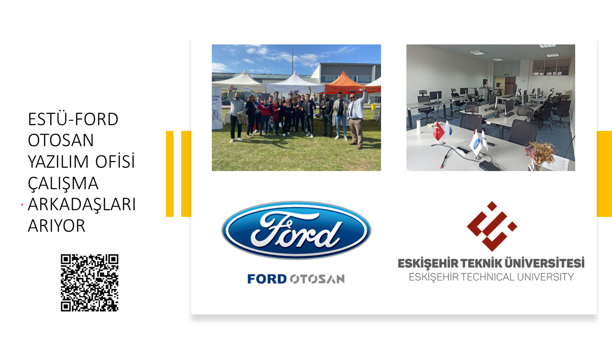

DUYURULAR
-
Öğrencilerimizin Dikkatine: ESTÜ Ford Otosan Yazılım Ofisi Takım Üyesi Adayları Aranıyor
Eskişehir Teknik Üniversitesi Ford Otosan Yazılım Ofisi Takım Üyesi Adayları aranmaktadır.
Çalışma Şekli: Yarı zamanlı (Ders saatleri haricinde)
Lokasyon: Eskişehir Teknik Üniversitesi FO Ofisi
Aşağıdaki alanlarda birden fazla pozisyon açılacaktır.
- FullStack Developer (OOP, Design Patterns, C#, .NET Core-Mvc, Sql/PlSql, DevSecOps, APIs)
- Data Science (PowerBI, Sql)
- Mobil
- Siber Güvenlik
Ön koşullar:
- 2024/2025 öğretim yılı içerisinde 2. veya 3. Sınıf öğrencisi olmak
- Genel not ortalamasının 2.0 ve üzeri olması
Genel Nitelikler:
- Başvurulan pozisyon ile ilgili teknolojiler konusunda bilgi sahibi olması
- Tercihen ilgili alanda uygulamalar geliştirmiş veya yayınlamış olması
- Kullanılacak yeni teknolojilere uyum sağlayabilir olması
- Kendini uygulama tasarımı konusunda geliştirmeye istekli olması
- Yürütülen projelerde görev alarak talepleri karşılayabilecek potansiyelde olması
- İngilizce dil yeterliliğine sahip olması
Başvuru link’i üzerinden bilgilerinizi girdikten sonra mail adresinize gelen link üzerinden detaylı CV bilgileriniz istenecektir
Son başvuru tarihi: 13.05.2024
Mülakatlar Mayıs ayı içerisinde yapılacaktır.
 -
Sözleşmeli Personel Alım İlanı Sonuçları
Sözleşmeli personel alım sonuçları açıklanmıştır aşağıdaki linkten kontrol sağlayabilirsiniz
Sözleşmeli Personel Alım İlanı Sonuçları için tıklayınız -
Pedagojik Formasyon Dersleri Duyurusu
“Pedagojik Formasyon Eğitimi” İle İlgili Önemli Duyuru
2023-2024 eğitim-öğretim dönemi güz yarıyılı itibarıyla kayıtlı olduğu program müfredatında yer alan derslerde başarısız dersi kalmayan ancak pedagojik formasyon derslerini tamamlamamış/başarısız olanların sadece pedagojik formasyon derslerine devam etmek amacıyla öğrencilikleri devam ettirilemeyecek olup mezuniyet işlemleri tamamlanacaktır. Bu mezunlar talep etmeleri halinde kalan formasyon eğitimi derslerini yükseköğretim kurumları tarafından düzenlenen Pedagojik Formasyon Eğitimi Sertifika Programlarından alabileceklerdir.
2022-2023 eğitim-öğretim dönemi bahar yarıyılında pedagojik formasyon eğitimi derslerini almaya başlayan ancak mezuniyet aşamasına gelememiş olan öğrenciler, kalan diğer alan dersleri ile birlikte formasyon eğitimi derslerini de azami öğrenim süresi boyunca alabileceklerdir. Ancak azami öğrenim süresinin son döneminde olup kayıtlı olduğu programın mezuniyet için gerekli tüm şartlarını yerine getiren ve pedagojik formasyon derslerinin bir kısmını alanların, öğrencilik statüsünün son bulması nedeniyle kalan dersleri için talep etmeleri halinde formasyon eğitimi derslerini yükseköğretim kurumları tarafından düzenlenen Pedagojik Formasyon Eğitimi
Son sınıf öğrencileri programlarının uygun olması durumunda 2023-2024 Akademik yılı Bahar Döneminde açılan ''Pedagojik Formasyon Eğitimi'' derslerinin tamamını alabileceklerdir.
-
2023-2024 Akademik Yılı Bahar Dönemi Kayıt Yenileme Duyurusu
2023-2024 Akademik Yılı Bahar Dönemi Kayıt Yenileme İşlemleri için TIKLAYINIZ
Gazipaşa Mahallesi, Eskişehir Teknik Üniversitesi İki Eylül Kampüsü 26555, Tepebaşı/ESKİŞEHİR
+90 222 213 77 77
info@eskisehir.edu.tr
2024 © Tüm hakları saklıdır. Eskişehir Teknik Üniversitesi